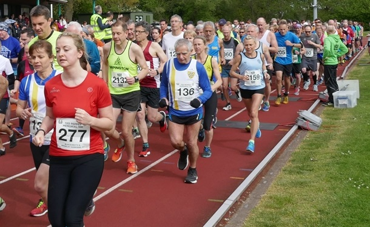

| Allan Lee was third and first M40 at the Whitstable 10k on Bank Holiday Monday 6th May, where Chris Hall also had a great run in 29th. The SAC results were:
The full results are here. |

Meanwhile, Andrew Mead was 20th and 4th M50 at the Ted Pepper 10k at Norman Park, Bromley, with Heather Fitzmaurice, Laura Andrade and Jim Fitzmaurice also running well. Heather took the W45 and Jim the M75 SCVAC multi-terrain title. The SAC results were:
| Pos | Gun | Chip | Name | Club | Sex | Cat | Num | GPos | GCat |
|---|---|---|---|---|---|---|---|---|---|
| 20 | 00:40:11 | 00:40:08 | Andrew Mead | Sevenoaks AC | M | Male Vet 50 | 243 | 20 | 4 |
| 82 | 00:45:49 | 00:45:43 | Heather Fitzmaurice | Sevenoaks AC | F | Female Vet 45 | 137 | 17 | 7 |
| 99 | 00:47:25 | 00:47:11 | Laura Andrade | Sevenoaks AC | F | Female Vet 35 | 10 | 21 | 8 |
| 303 | 01:03:10 | 01:03:04 | james fitzmaurice | Sevenoaks AC | M | Male Vet 60 | 136 | 187 | 27 |
The Ted Pepper results are here.
Sevenoaks AC also had four runners in both the Hildenborough 10 and 5 milers, with Lionel Stielow 1st M70 in the longer race:
SAC results at Hildenborough 10:
| Pos | Gun | Chip | Name | Club | Sex | Cat | Num | GPos | CPos |
|---|---|---|---|---|---|---|---|---|---|
| 5 | 01:03:04 | 01:03:01 | Nick Humphrey-Taylor | Sevenoaks AC | M | Male Vet 40 | 890 | 5 | 4 |
| 32 | 01:21:09 | 01:21:05 | Gabriela Mladenova | Sevenoaks AC | F | Female Vet 35 | 950 | 3 | 3 |
| 37 | 01:24:42 | 01:24:33 | Anna Humphrey-Taylor | Sevenoaks AC | F | Female Vet 45 | 931 | 5 | 2 |
| 47 | 01:31:42 | 01:31:37 | Lionel Stielow | Sevenoaks AC | M | Male Vet 70 | 884 | 38 | 1 |
SAC results at Hildenborough 5:
| Pos | Gun | Chip | Name | Club | Sex | Cat | Num | GPos | CPos |
|---|---|---|---|---|---|---|---|---|---|
| 16 | 00:31:44 | 00:31:43 | Zachary Ramsden | Sevenoaks AC | M | Male Vet 50 | 665 | 16 | 5 |
| 17 | 00:32:00 | 00:31:59 | Daniel Witt | Sevenoaks AC | M | Male Vet 40 | 613 | 17 | 5 |
| 28 | 00:34:44 | 00:34:42 | Graham Dwyer | Sevenoaks AC | M | Senior Male | 646 | 25 | 8 |
| 71 | 00:43:05 | 00:42:57 | Neil Haggertay | Sevenoaks AC | M | Male Vet 50 | 655 | 54 | 14 |
The full Hildenborough results are here.
Finally, Pauline Dalton was 72nd (6th W45) in 1:16:21 and Duncan Warwick-Champion 90th (20th M50) in 1:19:22 at the Witham 10 - results here.